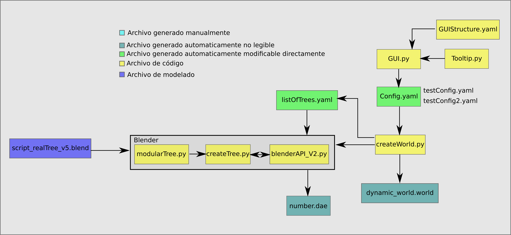
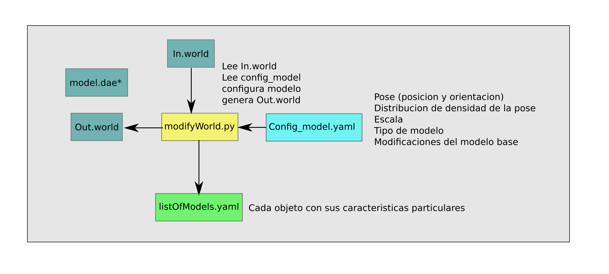

Campo¶
Este package engloba en conjunto de herramientas que permiten crear automaticamente entornos agrícolas. La comunicación entre programas es por medio de archivos .yaml estructurados de cierta manera. De manera ilustrativa se muestra un diagrama en bloques de todo el sistema, luego se describiran algunas partes relevantes.
Interfaz Grágica (GUI)¶
Mediante un archivo de creacion de la interfaz gráfica llamado GUI.py se puede estructura de forma básica la GUI. Para hacer uso de esta libreria hay que poner en la terminal
$ python GUI.py
En el siguiente video se explica como funciona todo el sistema:
Advertencia
Tener en cuenta que los videos e imagenes mostradas pueden pertenecer a versiones anteriores, con lo cual no son 100% fieles a la version actual.
Archivos de configuracion .yaml¶
Los archivos de configuracion .yaml son archivos de texto plano con un formato particular y muy popular dentro de los scripts en python. Tiene la particularidad de que el contenido se puede leer generando un diccionario (de python). Por ejemplo un archivo de configuracion puede ser:
maleza:
pose_x:
distribution: normal
distributionConfig:
loc: 8
scale: 3
val: 0
pose_y:
distribution: normal
distributionConfig:
loc: 8
scale: 3
val: 0
pose_fi:
distribution: normal
distributionConfig:
loc: 0.5
scale: 0.1
val: 0
scale:
distribution: normal
distributionConfig:
loc: 0.07
scale: 0.03
val: 0
amount:
distribution: fix
distributionConfig:
loc: 7
scale: 8
val: 30
Blender y Modelos .dae¶
Modular Tree¶
La generación automática de árboles realistas se hace gracias a WP95.
Mediante la libreria modular Tree y a partir de los archivos base llamados belnderAPI_V2.py y createTree.py permite generar ciertas variaciones del mismo objeto.
Actualmente este objeto en el archivo .blend debe estar seteado de determinada forma para que todo funcione bien, ya que el soft asume ciertas condiciones iniciales. El archivo actual que se esta usando se llama script_realTree_v5.blend.
Nota
commit 8153845fad4fc4c2a00b92f3caa98a0752641b97
Este archivo debe contener un arbol base y modelo instanciado de las hojas se deve llamar «leaf», la estructura del arbol se debe llamar «tree» y además debe estar en la modalidad final (no en «preview»). El soft modifica el arbol tree, hace las instancias de las hojas reales, guarda el tronco y todas las hojas y luego borra todas las hojas.
- Alguna info relevante de como usar el addon en Blender:
A modo de observación, se creeó una libreria que sirve de capa intermedia para todas las configuraciones de Modular Tree. Esta se llama modularTree.py y tiene implementadas todas las clases del AddOn. Sin embargo no esta todo implementado con respecto a los archivos de configuración. Para ver el código fuente revisar modularTree
Generación autimática de xml¶
La generación automática del mundo en xml es un poco compleja, por esto es necesario presentar el siguiente esquema:
Donde number.dae son los archivos generados automáticamente y para diferenciarlos se les pone un numero que luego será el mismo número en el que aparece en la definición del entorno dynamic_world.word (es un archivo con formato xml).
Modificación de un xml existente¶
La idea de este conjunto de herramientas es tomar un mundo ya creado y sumarle cosas, como maleza o suelo. La estructura es similar a los visto antes en #generacion-autimatica-de-xml, con la diferencia de que los modelos no se modifican, solo se copian con distintas poses, escalas y cantiades.
